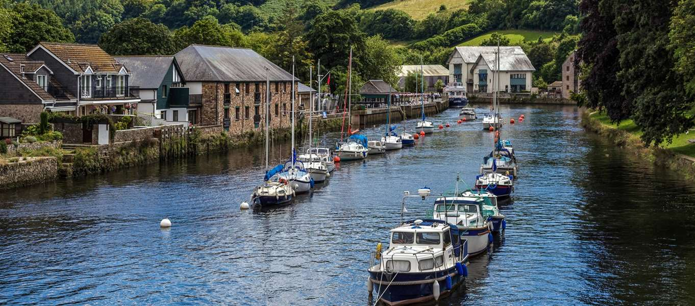

<!doctype htm>
<htm>
<head>
<meta charset='utf-8'>
<title>Мой любимый французский город</title>
</head>
<body>
<center><h1>Marseille</h1>

<p><b><i>Население Марселя: 869 815 человек</i></b></p>
<a href='https://ru.wikipedia.org/wiki/%D0%9C%D0%B0%D1%80%D1%81%D0%B5%D0%BB%D1%8C'>Ссылка на Википедию</a>
<br>
<a href='https://xakerv.github.io/bestHaker/'>Ссылка на Github</a>
</center>
<b>Расположение:</b>
<ol>
<li>Регион — Прованс — Альпы — Лазурный Берег</li>
<li>Департамент — Буш-дю-Рон</li>
<li>Округ — Марсель</li>
</ol>
  Я люблю Дениса <3
</body>
</htm>
